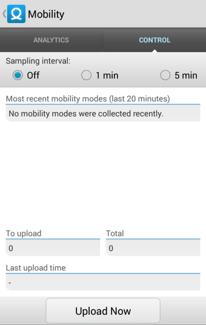

3.
Mobility Control
The second screen is where you'll enable and disable Mobility. The set of radio buttons at the top, labeled "Sampling Interval", control how frequently Mobility will attempt to determine your activity. "Off" indicates that Mobility is not collecting any information about your activity; "1 minute" and "5 minute" collect on 1- and 5-minute intervals, respectively.
Select "1 minute" for now, at which point the controls will briefly disable while Mobility starts up.
Once completed, you should see a "running man" icon in the notification bar, indicating that Mobility is currently collecting your activity trace. Note that you can always revisit this screen to disable Mobility whenever you like.
Once you've enabled Mobility, go ahead and continue your day, being sure to keep your phone on you. Mobility will collect and periodically upload your data, which we will review in the next step.